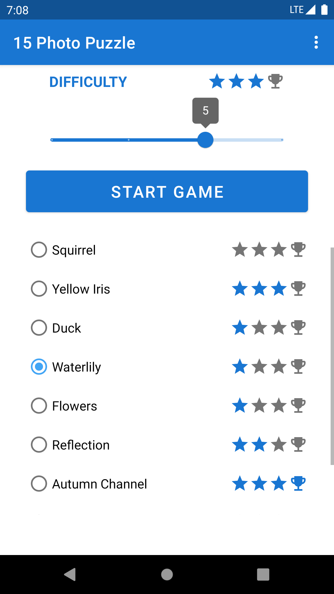
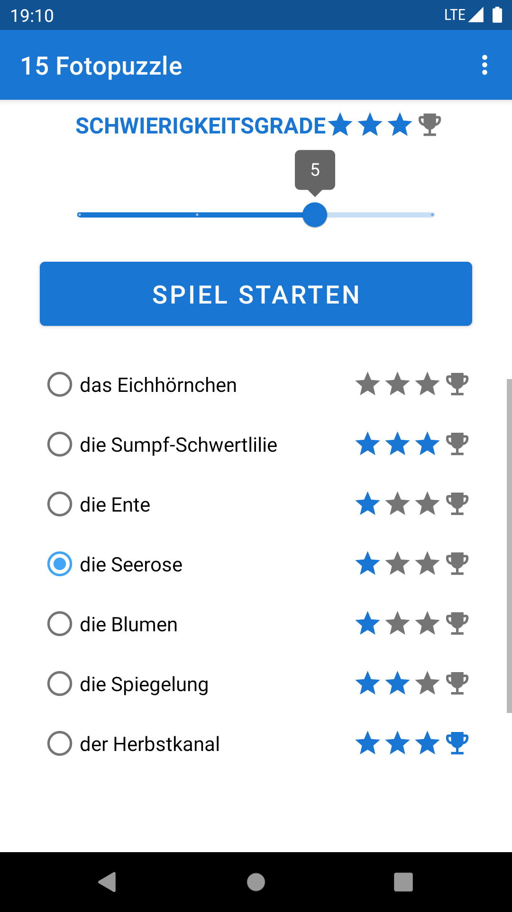
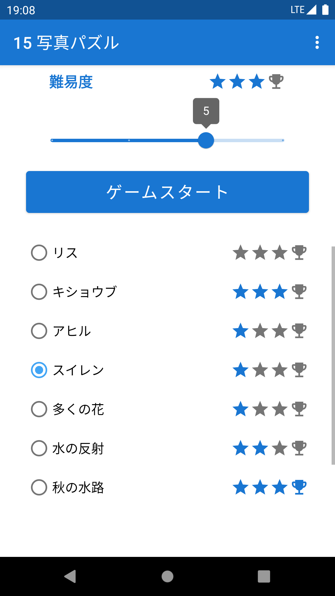
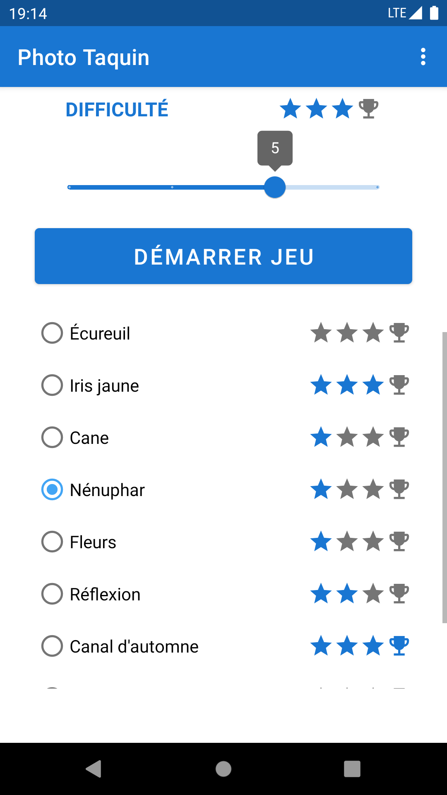
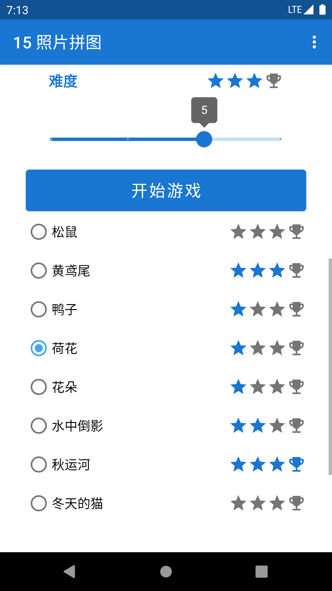

15 Photo Puzzle Android Logical Sliding Puzzle Game
Game Description to 15 Photo Puzzle Android Puzzle Sliding Game
A sliding puzzle game of 15 is a classic and timeless brain teaser that challenges players to slide numbered tiles into the correct order. The game typically features a 4x4 grid where 15 tiles are arranged randomly, leaving one empty space. The objective is to slide the tiles into the empty space to arrange them in numerical order from 1 to 15. This game is a perfect combination of fun and cognitive exercise, requiring concentration, critical thinking, and strategic planning.
The sliding puzzle game is highly engaging and addictive, as it offers a mix of simplicity and complexity. Players must carefully analyze the grid, identify the correct sequence of moves, and execute them flawlessly to solve the puzzle. The game’s difficulty increases as the number of tiles to be rearranged grows, making it a challenging yet rewarding experience.
One of the key features of the sliding puzzle game is its universal appeal. It can be played on various devices, including smartphones, tablets, and desktop computers, making it accessible to people of all ages. Many versions of the game also offer additional features, such as different levels, power-ups, and progress tracking, to keep players motivated and entertained.
The game is not only a great way to pass time but also a powerful tool for mental stimulation. It enhances problem-solving skills, improves memory, and boosts overall cognitive function. Whether you're looking for a relaxing pastime or a challenging brain workout, the sliding puzzle game of 15 delivers an unforgettable experience.
In summary, the sliding puzzle game of 15 is a delightful blend of logic, strategy, and entertainment. Its simple yet addictive gameplay, combined with its cognitive benefits, makes it a must-play for anyone looking to sharpen their mind while having fun.
Screenshots of 15 Photo Puzzle Android Puzzle Sliding Game
Multilanguage support of 15 Photo Puzzle Android Puzzle Sliding Game
|

|
15 Photo Puzzle Android sliding puzzle game of 15 is a delightful and challenging experience that keeps your mind sharp and entertained! The gameplay is incredibly engaging, with smooth animations and a clean interface that makes it a pleasure to play. It’s designed to test your logic, concentration, and problem-solving skills, offering a perfect balance between fun and mental exercise. The puzzles are cleverly crafted, and the increasing difficulty ensures that you’re always challenged, whether you’re a casual player or a puzzle master. Features like hints, progress tracking, and a sleek design make it highly user-friendly. It’s the perfect app for anyone looking to unwind, sharpen their mind, or simply enjoy a classic puzzle game. This app is a must-have for Android users who love brain teasers and want a daily dose of fun and challenge. Highly recommended!
|
|

|
Das Android-Schiebepuzzlespiel „15 Photo Puzzle“ mit 15 Rätseln ist ein unterhaltsames und herausforderndes Erlebnis, das Ihren Geist fit hält und unterhält! Das Gameplay ist unglaublich fesselnd, mit flüssigen Animationen und einer übersichtlichen Benutzeroberfläche, die das Spielen zu einem Vergnügen macht. Es wurde entwickelt, um Ihre Logik, Konzentration und Problemlösungsfähigkeiten zu testen und bietet eine perfekte Balance zwischen Spaß und geistiger Übung. Die Rätsel sind raffiniert gestaltet und der zunehmende Schwierigkeitsgrad sorgt dafür, dass Sie immer wieder herausgefordert werden, egal ob Sie Gelegenheitsspieler oder Rätselmeister sind. Funktionen wie Hinweise, Fortschrittsverfolgung und ein schlankes Design machen es äußerst benutzerfreundlich. Es ist die perfekte App für alle, die entspannen, ihren Geist schärfen oder einfach ein klassisches Rätselspiel genießen möchten. Diese App ist ein Muss für Android-Benutzer, die Denksportaufgaben lieben und ihre tägliche Dosis Spaß und Herausforderung suchen. Sehr empfehlenswert!
|
|
|
Фотопятнашки для Android — увлекательная и сложная игра-головоломка, которая держит ваш ум в тонусе и развлекает! Геймплей невероятно увлекательный, с плавной анимацией и понятным интерфейсом, что делает игру приятной. Игра разработана для проверки вашей логики, концентрации и навыков решения задач, предлагая идеальный баланс между развлечением и умственной нагрузкой. Головоломки продуманы до мелочей, а возрастающая сложность гарантирует, что вы всегда будете в напряжении, независимо от того, новичок вы или мастер головоломок. Такие функции, как подсказки, отслеживание прогресса и элегантный дизайн, делают игру очень удобной. Это идеальное приложение для тех, кто хочет расслабиться, развить свой ум или просто насладиться классической головоломкой. Это приложение обязательно нужно иметь пользователям Android, которые любят головоломки и хотят ежедневно получать дозу веселья и испытаний. Настоятельно рекомендуется!
|
|

|
15 フォトパズル Android の 15 枚の写真からなるスライド パズル ゲームは、楽しくてやりがいのある体験で、頭を冴えさせながら楽しませてくれます。ゲーム プレイは驚くほど魅力的で、滑らかなアニメーションとすっきりとしたインターフェイスで楽しくプレイできます。論理、集中力、問題解決能力を試すように設計されており、楽しさと頭の体操の完璧なバランスを提供します。パズルは巧妙に作られており、難易度が上がるにつれて、カジュアル プレイヤーでもパズル マスターでも、常に挑戦しがいのあるゲームになります。ヒント、進行状況の追跡などの機能、洗練されたデザインにより、非常にユーザー フレンドリーになっています。リラックスしたい、頭を冴えさせたいという人、または単に古典的なパズル ゲームを楽しみたい人に最適なアプリです。このアプリは、頭の体操が好きで、毎日楽しさとチャレンジを求めている Android ユーザーにとって必須のアプリです。強くお勧めします!
|
|
|
15 Photo Puzzle, el juego de rompecabezas deslizante para Android, es una experiencia encantadora y desafiante que te mantendrá entretenido y alerta. La jugabilidad es increíblemente atractiva, con animaciones fluidas y una interfaz clara que lo convierte en un placer. Está diseñado para poner a prueba tu lógica, concentración y habilidades para resolver problemas, ofreciendo un equilibrio perfecto entre diversión y ejercicio mental. Los rompecabezas están ingeniosamente diseñados, y la dificultad creciente garantiza un desafío constante, ya seas un jugador ocasional o un experto en rompecabezas. Características como pistas, seguimiento de progreso y un diseño elegante lo hacen muy fácil de usar. Es la aplicación perfecta para cualquiera que busque relajarse, agudizar su mente o simplemente disfrutar de un juego de rompecabezas clásico. Esta aplicación es imprescindible para los usuarios de Android que aman los rompecabezas y buscan una dosis diaria de diversión y desafío. ¡Muy recomendable!
|
|
|
O jogo de quebra-cabeça deslizante para Android 15 Photo Puzzle é uma experiência deliciosa e desafiadora que mantém sua mente afiada e entretida! A jogabilidade é incrivelmente envolvente, com animações suaves e uma interface limpa que o torna um prazer de jogar. Ele foi projetado para testar sua lógica, concentração e habilidades de resolução de problemas, oferecendo um equilíbrio perfeito entre diversão e exercício mental. Os quebra-cabeças são habilmente elaborados e a dificuldade crescente garante que você seja sempre desafiado, seja você um jogador casual ou um mestre em quebra-cabeças. Recursos como dicas, acompanhamento de progresso e um design elegante o tornam altamente amigável. É o aplicativo perfeito para quem quer relaxar, aguçar a mente ou simplesmente desfrutar de um jogo de quebra-cabeça clássico. Este aplicativo é essencial para usuários de Android que amam quebra-cabeças e querem uma dose diária de diversão e desafio. Altamente recomendado!
|
|

|
Le jeu de puzzle coulissant 15 Photo Puzzle pour Android est une expérience stimulante et stimulante qui stimule et divertit votre esprit ! Le gameplay est incroyablement captivant, avec des animations fluides et une interface épurée qui le rendent agréable à jouer. Conçu pour tester votre logique, votre concentration et votre capacité à résoudre des problèmes, il offre un équilibre parfait entre divertissement et exercice mental. Les puzzles sont intelligemment conçus et leur difficulté croissante vous met constamment au défi, que vous soyez un joueur occasionnel ou un expert en puzzles. Des fonctionnalités comme les indices, le suivi de la progression et un design élégant le rendent très convivial. C'est l'application idéale pour tous ceux qui cherchent à se détendre, à aiguiser leur esprit ou tout simplement à profiter d'un jeu de puzzle classique. Cette application est indispensable pour les utilisateurs Android qui aiment les casse-têtes et recherchent une dose quotidienne de plaisir et de défis. Fortement recommandé !
|
|
|
15 Photo Puzzle, il gioco di puzzle scorrevole per Android, è un'esperienza piacevole e stimolante che mantiene la mente attiva e intrattenuta! Il gameplay è incredibilmente coinvolgente, con animazioni fluide e un'interfaccia pulita che lo rende un piacere da giocare. È progettato per mettere alla prova la tua logica, la tua concentrazione e le tue capacità di problem-solving, offrendo un perfetto equilibrio tra divertimento ed esercizio mentale. I puzzle sono sapientemente realizzati e la difficoltà crescente assicura che tu sia sempre stimolato, che tu sia un giocatore occasionale o un maestro dei puzzle. Funzionalità come suggerimenti, monitoraggio dei progressi e un design elegante lo rendono estremamente intuitivo. È l'app perfetta per chiunque voglia rilassarsi, affinare la mente o semplicemente godersi un classico gioco di puzzle. Questa app è un must per gli utenti Android che amano i rompicapo e desiderano una dose giornaliera di divertimento e sfida. Altamente raccomandato!
|

|
15 Photo Puzzle – gra logiczna na Androida składająca się z 15 elementów to zachwycające i wymagające doświadczenie, które utrzyma Twój umysł w dobrej kondycji i zapewni rozrywkę! Rozgrywka jest niezwykle wciągająca, z płynnymi animacjami i przejrzystym interfejsem, który sprawia, że granie w nią to czysta przyjemność. Gra została zaprojektowana tak, aby przetestować Twoją logikę, koncentrację i umiejętności rozwiązywania problemów, oferując idealną równowagę między zabawą a ćwiczeniem umysłu. Łamigłówki są przemyślane, a rosnący poziom trudności gwarantuje, że zawsze będziesz miał wyzwanie, niezależnie od tego, czy jesteś graczem okazjonalnym, czy mistrzem łamigłówek. Funkcje takie jak podpowiedzi, śledzenie postępów i elegancki design sprawiają, że gra jest niezwykle przyjazna dla użytkownika. To idealna aplikacja dla każdego, kto chce się zrelaksować, wyostrzyć umysł lub po prostu cieszyć się klasyczną grą logiczną. Ta aplikacja to pozycja obowiązkowa dla użytkowników Androida, którzy uwielbiają łamigłówki i chcą codziennie dostarczać sobie porcję zabawy i wyzwań. Gorąco polecam!
|
|

|
15 Photo Puzzle 是一款安卓滑动拼图游戏，15 张图片组成，既充满乐趣又充满挑战，能让您的思维保持敏锐，乐趣无穷！游戏引人入胜，动画流畅，界面简洁，让您乐在其中。它旨在考验您的逻辑思维、专注力和解决问题的能力，在趣味性和脑力锻炼之间取得完美平衡。谜题设计巧妙，难度递增，无论您是休闲玩家还是拼图大师，都能始终感受到挑战。提示、进度追踪等功能以及流畅的设计使其高度人性化。对于任何想要放松身心、磨练思维或只是享受经典益智游戏的人来说，这都是一款完美的应用。对于热爱脑筋急转弯、希望每天都享受乐趣和挑战的安卓用户来说，这款应用是必备之选。强烈推荐！
|
|
|
15개의 사진 퍼즐 안드로이드 슬라이딩 퍼즐 게임은 15개의 사진으로 구성된 즐겁고 도전적인 경험을 선사하며, 여러분의 두뇌를 예리하고 즐겁게 만들어 줄 것입니다! 매끄러운 애니메이션과 깔끔한 인터페이스로 게임 플레이가 놀랍도록 몰입도를 높여줍니다. 논리력, 집중력, 문제 해결 능력을 시험하도록 설계되어 재미와 두뇌 훈련의 완벽한 균형을 제공합니다. 정교하게 설계된 퍼즐은 난이도가 점점 높아지기 때문에 초보자든 퍼즐 마스터든 항상 도전 의식을 불러일으킵니다. 힌트, 진행 상황 추적, 세련된 디자인 등의 기능으로 사용자 친화적입니다. 긴장을 풀고, 두뇌를 예리하게 하고 싶거나, 단순히 클래식 퍼즐 게임을 즐기고 싶은 모든 사람에게 완벽한 앱입니다. 두뇌 자극 게임을 좋아하고 매일 재미와 도전을 원하는 안드로이드 사용자에게 꼭 필요한 앱입니다. 강력 추천합니다!
|
Positive feedback to 15 Photo Puzzle Android Puzzle Sliding Game
This Android sliding puzzle game of 15 is a fantastic and highly addictive brain teaser! The gameplay is smooth, and the design is clean and user-friendly. It challenges your logic, concentration, and problem-solving skills while keeping you engaged for hours. The puzzles are well-crafted, and the increasing difficulty ensures endless fun and mental stimulation. Features like hints, undo options, and progress tracking make it even more appealing. It’s perfect for all ages and skill levels, offering a great balance between challenge and entertainment. If you love puzzles, this game is a must-download! It’s not just a game—it’s a mental workout that’s both fun and rewarding. Highly recommended!
Here is a link to 15 Photo Puzzle Android Puzzle Sliding Game
This Android sliding puzzle game of 15 is an absolute gem! The gameplay is incredibly smooth, and the design is elegant and intuitive, making it a joy to play. It’s the perfect mix of challenge and entertainment, keeping your mind sharp while providing endless hours of fun. The puzzles are thoughtfully crafted, with varying difficulty levels that cater to both casual players and serious enthusiasts. Features like hints, save progress, and undo options make it even more user-friendly. It’s a fantastic way to improve focus, concentration, and problem-solving skills while feeling accomplished. The app is lightweight and runs seamlessly on Android devices, making it accessible anytime, anywhere. Whether you’re looking to unwind or give your brain a workout, this game delivers. Highly recommended for anyone who loves puzzles and wants a daily dose of mental exercise!"
Here is a link to 15 Photo Puzzle Android Puzzle Sliding Game
This Android sliding puzzle game of 15 is a delightful and challenging experience that keeps your mind sharp and entertained! The gameplay is incredibly engaging, with smooth animations and a clean interface that makes it a pleasure to play. It’s designed to test your logic, concentration, and problem-solving skills, offering a perfect balance between fun and mental exercise. The puzzles are cleverly crafted, and the increasing difficulty ensures that you’re always challenged, whether you’re a casual player or a puzzle master. Features like hints, progress tracking, and a sleek design make it highly user-friendly. It’s the perfect app for anyone looking to unwind, sharpen their mind, or simply enjoy a classic puzzle game. This app is a must-have for Android users who love brain teasers and want a daily dose of fun and challenge. Highly recommended!
Here is a link to 15 Photo Puzzle Android Puzzle Sliding Game
Download links for 15 Photo Puzzle Android Puzzle Sliding Game
General information about logical puzzle games
Logical puzzle games are a category of brain teasers that challenge players to think critically, solve problems, and use reasoning skills to achieve a specific goal or complete a task. These games come in various forms, such as sliding puzzles, number games, logic grids, and riddles, and are designed to stimulate the mind while providing entertainment. Logical puzzle games are popular worldwide due to their simplicity, versatility, and ability to enhance cognitive abilities.
One of the most iconic examples of logical puzzle games is the sliding puzzle, often referred to as the "15-puzzle." This game involves a grid of numbered tiles and one empty space. The objective is to slide the tiles into the empty space to arrange them in numerical order. Such puzzles require players to think strategically, plan their moves, and adapt their approach as the difficulty increases. These games are not only fun but also serve as excellent tools for improving concentration, problem-solving skills, and patience.
Logical puzzle games are widely available on various platforms, including mobile apps, websites, and physical boards. Many of these games are designed with adjustable difficulty levels, making them suitable for players of all ages and skill levels. For instance, some sliding puzzle apps offer features like hints, progress tracking, and customizable levels to enhance the gaming experience. These elements make logical puzzle games both challenging and rewarding, as players can track their progress and see tangible improvements in their problem-solving abilities over time.
The benefits of playing logical puzzle games extend beyond entertainment. Research has shown that engaging in such activities can improve cognitive functions like memory, critical thinking, and decision-making. These games are particularly valuable for children, as they help develop essential skills like logical reasoning and spatial awareness. For adults, they provide a mental workout, reducing stress and keeping the mind sharp.
Logical puzzle games are also versatile in their application. They can be used as educational tools in schools to teach mathematical concepts, problem-solving strategies, and teamwork. Additionally, they are often recommended for individuals looking to maintain brain health, as they provide an engaging way to exercise the mind.
In conclusion, logical puzzle games are a timeless and versatile form of entertainment that offer both fun and cognitive benefits. Whether it’s a sliding puzzle, a number game, or a logic grid, these games challenge players to think critically and solve problems, making them a valuable addition to anyone’s leisure or educational routine.
Download Best 15 Photo Puzzle Android Puzzle Sliding Game
Useful links about logical puzzle games
General rules of logical puzzle games
Logical puzzle games are a diverse category of brain teasers that challenge players to think critically, solve problems, and use reasoning skills to achieve a specific goal or complete a task. These games often involve logic, mathematics, patterns, or strategy, and they are designed to stimulate the mind while providing entertainment.
1. Objective
Logical puzzle games have a clear goal or objective. For example, in a sliding puzzle game like the classic "15-puzzle," the goal is to slide numbered tiles into a specific order, typically from 1 to 15. In a number-based puzzle, the objective might be to solve an equation or sequence numbers in a particular pattern.
2. Logic and Reasoning
Most logical puzzle games require players to use logic and reasoning to solve the puzzle. This involves analyzing the problem, identifying patterns, and deducing the correct sequence of moves or steps to achieve the objective.
3. Rules and Constraints
Logical puzzle games are governed by a set of rules that dictate how the puzzle can be solved. For instance, in a sliding puzzle, players can only move one tile at a time into the empty space, and the tiles must be arranged in numerical order. In a logic grid puzzle, players must follow clues to determine the correct placement of items or people.
4. Problem-Solving
The core of logical puzzle games is problem-solving. Players must break down the puzzle into smaller, manageable parts, identify relationships between elements, and experiment with different strategies to find the solution.
5. Trial and Error
Many logical puzzle games involve trial and error. Players often try different approaches, learn from their mistakes, and refine their strategies until they find the correct solution.
6. Variations and Levels
Logical puzzle games can vary in difficulty, with different levels designed to challenge players of all skill levels. Some puzzles may have multiple solutions, while others have only one correct answer.
7. Timeless Appeal
Logical puzzle games are often timeless, meaning they can be enjoyed by people of all ages and skill levels. They are also highly customizable, with many variations available to keep the gameplay fresh and engaging.
8. Cognitive Benefits
Beyond entertainment, logical puzzle games offer cognitive benefits, such as improving concentration, critical thinking, memory, and problem-solving skills. These games are widely used as educational tools to enhance mental agility and logical reasoning.
Conclusion
Logical puzzle games are governed by a set of rules that challenge players to think critically and solve problems. Whether it’s sliding tiles into place, solving number sequences, or deciphering riddles, these games provide a fun and rewarding way to exercise the mind. The rules may vary depending on the type of puzzle, but the core principles of logic, reasoning, and problem-solving remain constant, making logical puzzle games a timeless and universally appealing form of entertainment.
Conclusion for logical puzzle games
The sliding puzzle game of 15 is an exceptional and captivating brain teaser that offers an unparalleled combination of challenge and entertainment. This classic puzzle game features a 4x4 grid with 15 numbered tiles and one empty space, requiring players to slide the tiles into the empty space to arrange them in numerical order. The gameplay is smooth, intuitive, and highly addictive, making it a perfect choice for players of all ages and skill levels.
One of the standout features of this game is its timeless appeal. Whether you're a casual player or a puzzle enthusiast, the sliding puzzle game of 15 provides endless hours of mental stimulation. The increasing difficulty levels ensure that the game remains challenging and rewarding, keeping players engaged and motivated to solve the puzzle. Many versions of the game also offer additional features, such as hints, undo options, and progress tracking, which enhance the overall gaming experience.
Beyond its entertainment value, the sliding puzzle game of 15 is an excellent tool for improving cognitive skills. It enhances concentration, critical thinking, and problem-solving abilities while providing a sense of accomplishment when the puzzle is solved. The game's simplicity makes it accessible, while its complexity ensures that it is never boring. Whether you're looking to unwind after a long day or give your brain a workout, this game delivers.
In conclusion, the sliding puzzle game of 15 is a perfect blend of fun and mental exercise. Its smooth gameplay, challenging puzzles, and cognitive benefits make it a must-play for anyone who loves brain teasers. Whether on a smartphone, tablet, or desktop, this game offers an unforgettable experience that keeps your mind sharp and entertained. If you haven't tried it yet, download it today and discover the joy of sliding puzzle gameplay!
Hash tags for logical puzzle games
#SlidingPuzzle, #15Puzzle, #BrainTeaser, #LogicalGame, #NumberPuzzle, #MentalExercise, #ProblemSolving, #ConcentrationGame, #CriticalThinking, #SlidingPuzzleGame, #IQGame, #MindGame, #PuzzleAddict, #SlidingPuzzle15, #LogicPuzzle, #NumbersGame, #SequencePuzzle, #TileGame, #GridPuzzle, #BrainTraining, #CognitiveGame, #MemoryGame, #StrategyGame, #DeductionPuzzle, #ReasoningGame, #SlidingPuzzle15, #SlidingPuzzleFun, #BestSlidingPuzzle, #AmazingSlidingPuzzle, #Perfect15Puzzle, #15PuzzleChallenge, #SlidingPuzzleMaster, #LogicalPuzzleGame, #NumberSequencePuzzle, #TileSlidingGame, #GridLogicPuzzle, #BrainTeaser15, #MentalPuzzleGame, #ConcentrationPuzzle, #CriticalThinkingGame, #IQPuzzle15, #MindPuzzleSliding, #SlidingPuzzleAddict, #PuzzleSliding15, #15PuzzleSliding, #LogicNumbersGame, #SequenceSlidingPuzzle, #TileSlidingPuzzle, #GridSlidingGame, #BrainTeaserTile, #CognitiveSlidingPuzzle, #MemorySlidingGame, #StrategySlidingPuzzle, #DeductionSlidingGame, #ReasoningSlidingPuzzle, #SlidingPuzzleIQ, #MindGame15